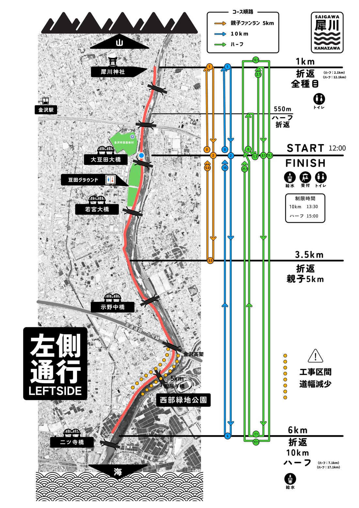

折返しの順番
折り返したら毎回スタート前を通過して、反対側の折返しへ向かいます。通過したらチェック。「次 ▶」が次の目標です。
迷いやすい場所（写真）
オレンジの印が分岐です。写真の矢印の方向へ進んでください。タップすると地図で場所を表示します。（写真は2024年撮影・位置はおおよそ）
大事なこと
- 左側通行。往復コースなので、すれ違うランナーと自転車に注意。
- 山側＝上流（犀川神社の方）、海側＝下流（二ツ寺橋の方）。
- 折返しはコーン・スタッフの指示が優先です。地図の折返し位置は目安です。
- 金沢高架〜雪吊橋のあたりは工事区間（道幅がせまい・鉄板の段差）。
- 給水：スタート／ゴール、6km折返し。トイレ：豆田グラウンド・芸術村、1km折返し付近。
- 制限時間：10km 13:30／ハーフ 15:00（スタートから90分／180分）。
- 走りながらの画面操作は危険です。確認するときはコースの端で立ち止まってください。
コース図
